Chapter4設計概念 <<
Previous Next >> 參考資料
Chapter7細部設計
主旨:在本章節中，將會詳細介紹原型最終設計，包括連趕機構、膝蓋義肢、機架、馬達。
7-1聯動機構(p36-p37)
目的在於滿足膝蓋關節與大腿骨擺動之角位移，根據Solidworks相對於水平的運動分析。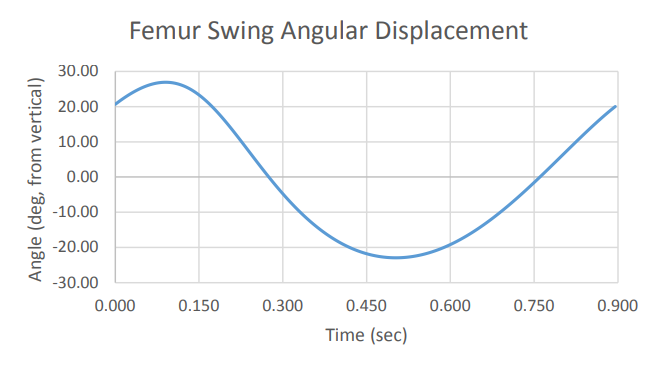
(圖35)顯示大腿骨接近50度(27-(-23)=50)
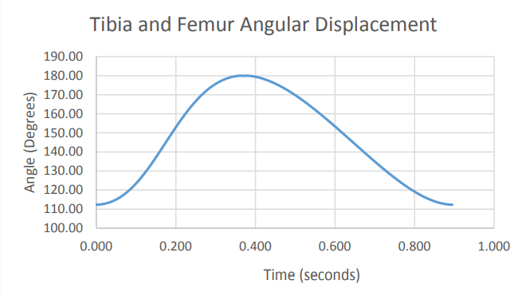
(圖36)顯示膝蓋位移68度(180-112=68)
依照人類站立時膝蓋會有25度小幅度彎曲，在擺動桿件狀態(參考圖5)步態前為較大65-70度。
然而，此機構無法重現最初25度之小幅度彎曲，有可能是因為西奧。詹森機構近乎於近諧波運動，膝蓋則沒有。
上(圖35)為機械大腿骨擺動角位移，下(圖36)為大腿骨與脛骨(小腿骨位於內側，形狀為三角柱狀)之角位移
此機構採2/3之比例，為了保持預算和生產機構不超出範圍，表5列出鍊條長度，每鏈接之詳細說明圖可在附錄B中查看。
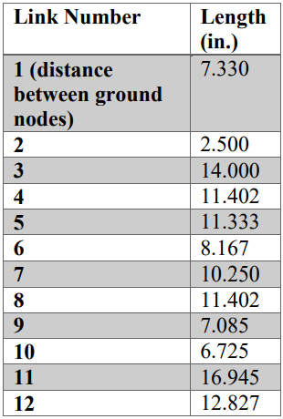
(表5)最終鏈接的2/3比例鏈接長度。
7-2膝蓋關節換置
7-2-1 3D列印物件(p37)
大多數使用TKR(全人工膝關節置換)之技術，由於團隊無法實際獲得TKR，因此使用MakerBot的Thingiverse，Thingiverse是一個設計共同體為製作與共享3D列印物件。
我們發現從3D掃描創建出膝關節置換模型。模型包括大腿骨零件、脛骨、塑料墊片，透過CT掃描將之建模，切割並組裝各膝蓋關節。
TKR需要SolidWorks縮放尺寸為正常人類大小，團隊使用來自Elsner等人的研究，是使用118人去測量、分析，解剖骨骼植入並匹配大小正確的膝關節換置，附錄B顯示3D列印零件之各個尺寸。
此外，大腿骨、脛骨修飾使連桿機構容納適合附屬件，切割骨頭末端、在銼刀上打孔以允許螺釘將3D列印零件連接大腿骨、脛骨鏈接 (圖37)顯示切割與SolidWorks模組中大腿骨零件上的孔洞。
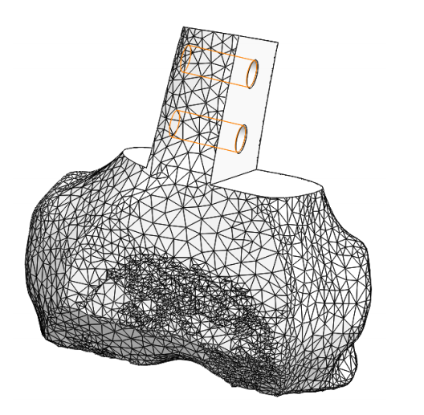
(圖37)用於3D列印的大腿骨SolidWorks之模型(副檔名為.stl)。
7-2-2 膝關節換置、安裝(p38)
研究團隊判斷最好的連接膝蓋部位的方法是將膝蓋部位分開在一個平面機構上。
四個六角形支腳固定於膝蓋替代物連接到大腿骨和脛骨鏈接的機構中(圖38)，六角形固定連接在80/20片上，由兩個螺栓固定於兩端的板子，使保持3D列印骨骼之操作。
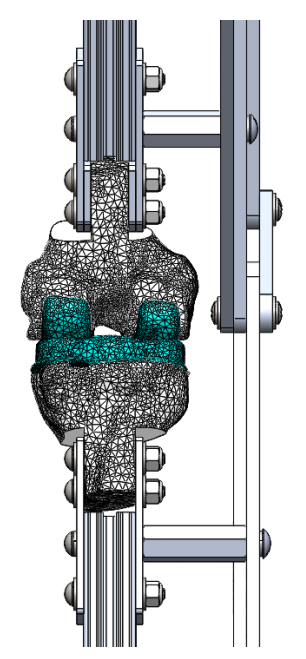
(圖38)大腿骨和脛骨的連接鏈接之機構
7-2-3 關節(p39-p40)
此機構使用螺絲柱（圖39）作為銷接頭將鏈節連接在一起。節點三藉由長桿半螺紋內六角螺釘連接在地面上。
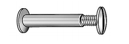
(圖39)範例為在Grainger網路商城中的一根螺絲柱（也稱為接線柱）。
當研究團隊將大腿骨和脛骨鏈接連接到SolidWorks的最終機構時，發現大腿骨和部分脛骨會相互抵觸（如圖40）。
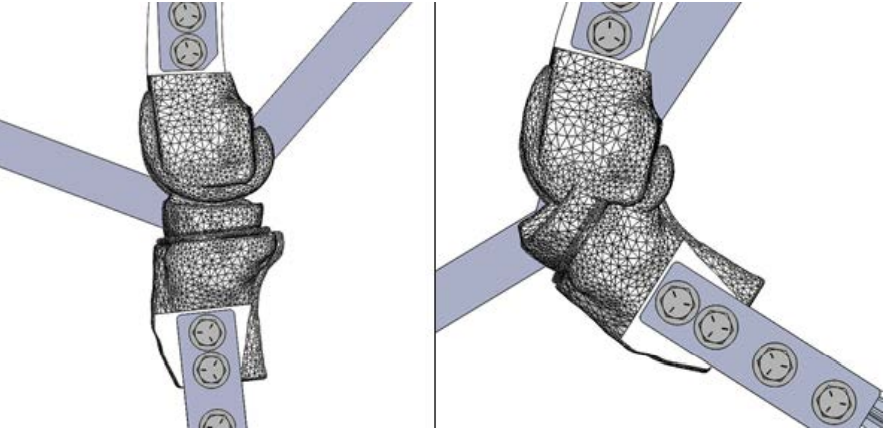
(圖40)（左圖）與大腿骨和脛骨的連接點相近於180度。
（右圖）與大腿骨和脛骨的連接角度，導致大腿骨與脛骨元件之間相互抵觸。
為了解決此干涉問題，一個插槽替換了鏈接12上的接頭（圖41）。
插槽確定最大尺寸為0.875英吋。
以不相互抵觸為前提，脛骨與大腿骨鏈接要大於最小所需距離並在另一個最大干涉之位置上。
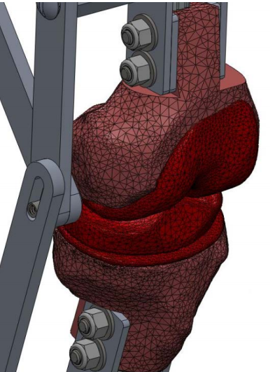
(圖41)大腿骨鏈接的插槽點可防止干涉。
7-2-4肌腱和韌帶(p41-p42)
為了在週期中幫助膝蓋替換零件保持在一起，脛骨鏈接由於重力因此不會待在插槽底部，為了還原原型，將膝蓋骨和股四頭肌肌腱的模組隨著前後十字韌帶連接到3D列印骨骼組件(圖42)
重建肌腱與韌帶使用可以承受一磅力的橡皮筋。
添加肌腱與韌帶助於膝蓋替換零件共同在一起，將會創建滾滑接頭，橡皮筋會被連接在80/20的T型擠型。
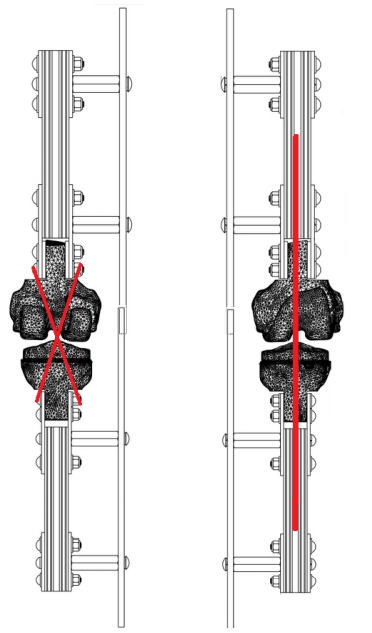
(圖42)紅線表示為模擬肌腱、韌帶的橡皮筋所在處(左)十字韌帶(ACL程式語言學協會 and PCL列印控制表)，(右)髕腱與股四頭肌肌腱。
整體來說，此機構有一個自由度(DOF)，並有12根桿件，15個全關節和2個半關節。
一個半關節是插槽、第二個半關節是滾滑接頭從肌肉、韌帶創建而來。
因此，接續採用自由度方程式計算機動性。
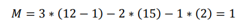
(方程式1)為自由度方程式算式
關鍵字:
- rubber bands = 橡皮筋
- ligaments = 韌帶
- tendons = 肌腱
- attached = 連接；附上
- extrusions with t-nuts = T型擠型(製作固定截面形狀的物體)
- cruciate ligaments = 十字韌帶
- patellar = 髌腱(位於連接膝蓋骨與小腿脛骨之間的肌腱)
- quadriceps tendons = 股四頭肌肌腱
- mechanism = 機構
- joints = 關節(有分全跟半)；接頭
- roll-slide joint = 滾滑接頭
- mobility = 流動性；可動性
- calculated = 計算的
- equation = 方程式
- followed = 接續；跟隨
- evolutional = 進化的
- Precision = 精密；精度
- Specifications = 規格
- Positional Evolution = 位置進程
- torque = 力矩
- external forces = 外力
- inertia forces = 慣性力
- equation = 方程式
- Variable = 變數
包括膝關節換置數在內的終端連桿機構的進化圖像，如圖43所示。
藉由研究團隊與Sparton(斯帕頓)科技公司的合作，此
連桿機構雷射切割鋁料。
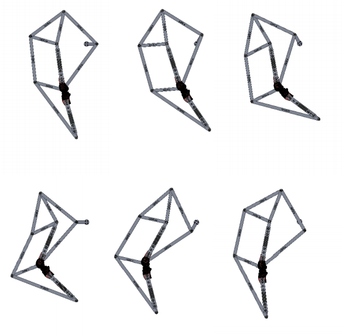
(圖43)為一個完整循環中最後鏈接的位置進程。
7-3馬達(p42-p43)
該機構是一個轉速75rpm來自ServoCity的精密齒輪驅動馬達，(圖44)顯示尚未加入其他配置的馬達，操作馬達電壓位於6-12伏特間，在最大電壓下承受力矩為166.6盎司。
能看見精密齒輪為馬達中的尺寸圖(尺寸圖為公制單位，注意馬達只能為此單位制)，在附錄D中精密齒輪馬達已有一系列完整的規格列表。
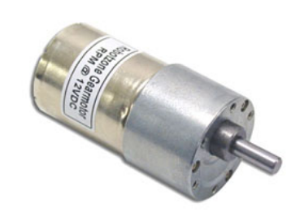
(圖44)來自ServoCity用於原型機的馬達。
為了選擇馬達的最終設計，該研究團隊使用SolidWorks做出運動模擬並用虛擬操作方式找出力矩，有幾個提供電力與連接桿件的軸之配置是必須。
7-3-1 虛擬工作方法(p43)
虛擬工作方法為能量動態力分析種類之一，外力有被計算在內而內力則為無關數值。再不損耗的況下利用能量守恆定律，儲存在系統中的能量變化率等同於提供外力的能量。
這種關聯藉由外力和扭矩變化與慣性力和扭矩的總和來表示，由此產生方程式為如下(顯著的變數為向量)，該方程式變數如表6定義在虛擬工作方程式中其變數值。
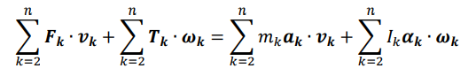
(方程式2)外力和扭矩變化與慣性力和扭矩的總和
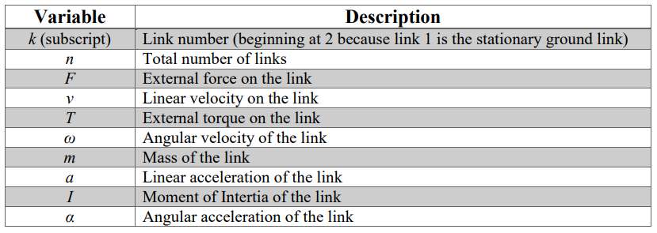
(表6)定義在虛擬工作方程式中其變數值
Chapter4設計概念 <<
Previous Next >> 參考資料